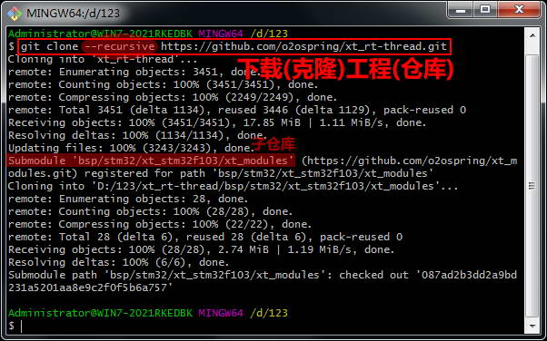
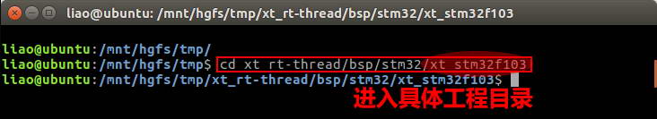
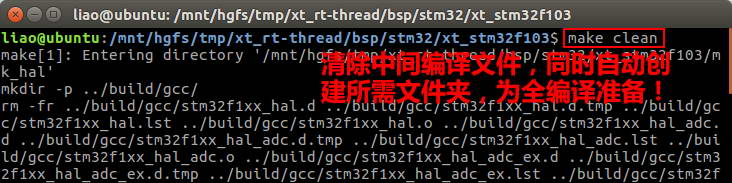
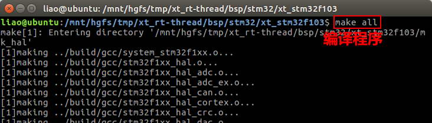
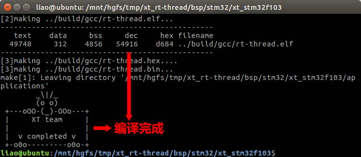
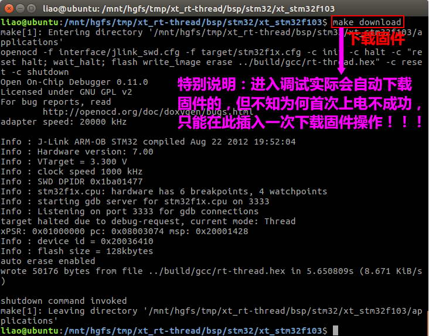
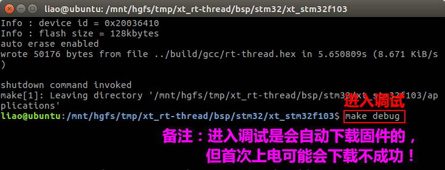
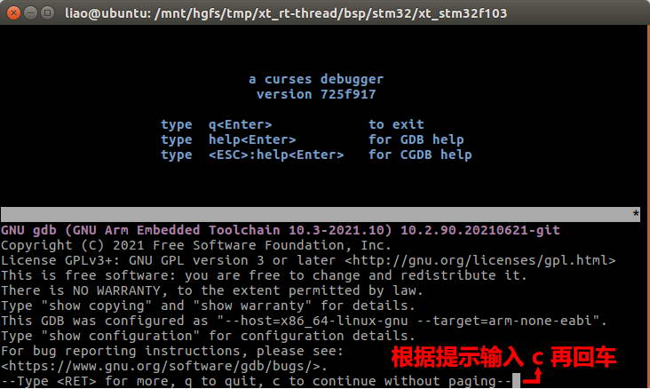
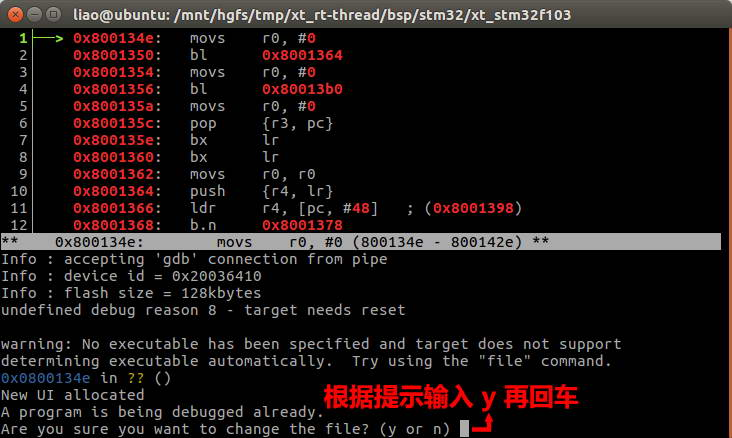
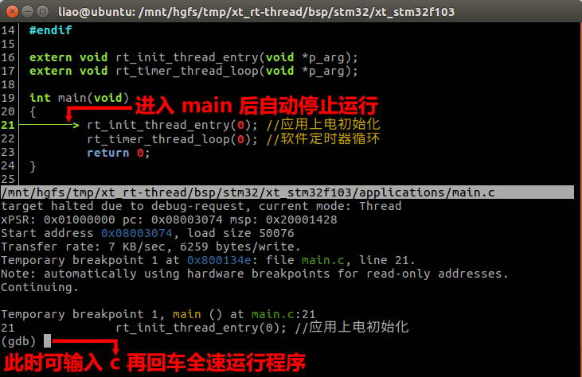

一、通用技术开发平台的使用
目前平台使用到的工具有：git、make、cgdb、arm-none-eabi-gdb、arm-none-eabi-gcc、openOCD、libusb 等。关于这些工具的安装及使用，以后再进一步介绍。本章节主要是以最简单的方式介绍开发平台的编译与调试：
1、下载工程：
git clone --recursive https://github.com/o2ospring/xt_rt-thread.git

2、进入工程：
cd xt_rt-thread/bsp/stm32/xt_stm32f103/

3、清除文件
make clean

4、编译工程：
make all


5、烧录固件：
make download

6、进入调试：
make debug




7、命令总览：
make clean //清除
make all //编译
make download //烧录
make debug //调试
备注：可输入make help查看目前支持的操作命令！
二、DALI 灯具开发平台的使用
待续……
三、KNX 系统开发平台的使用
待续……